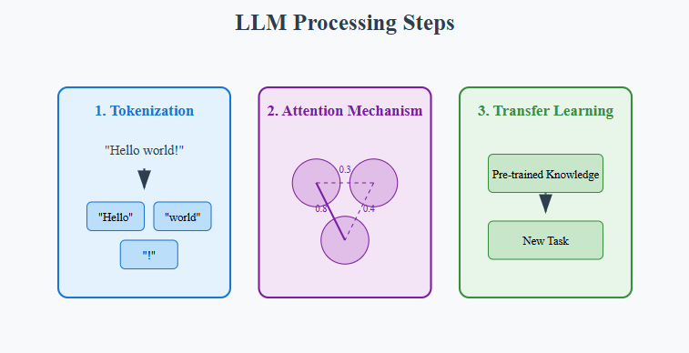
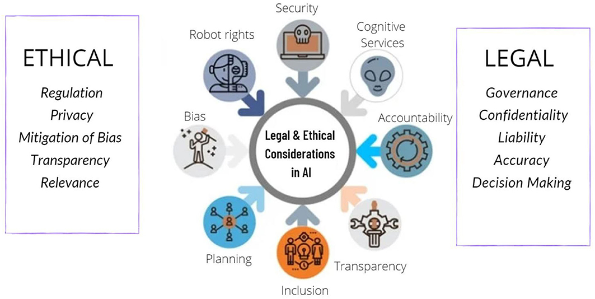

Beyond the Hype: Identifying the Critical Flaw in Today's LLMs

Posted on October 27, 2024
Table of Contents
Abstract Understanding Large Language Models (LLMs) Artificial Hallucinations in AI-generated Content The Rise of Disinformation Generation Ethical Considerations in AI Research Mitigating flaws in LLMs In a nutshellAbstract
This blog examines the critical issues associated with large language models (LLMs), particularly their propensity for generating false information, While LLMs have significantly influenced areas like research and academia, they often produce inaccuracies known as artificial hallucinations. These errors can have serious implications for scientific writing and raise concerns about security and privacy. We delve into the ethical dilemmas inherent in AI development and current research methodologies, highlighting the urgent need to address these flaws. By fostering a nuanced understanding of LLMs' role in shaping information accuracy in our digital landscape, this blog aims to inform readers about the implications of LLM technology and promote responsible practices that safeguard the integrity of information in the modern age.

Understanding Large Language Models (LLMs)
What are LLMs? Large Language Models, or LLMs, are the advanced computer programs designed to understand and generate human language. Think of them as highly sophisticated chatbots that can read, write, and respond in a way that feels natural and human-like. These are artificial intelligence systems that utilize deep learning techniques, particularly transformer architectures, to process and generate human language. These models are trained on vast amounts of text from books, websites, and other sources, allowing them to learn the patterns and rules of language. Because they have processed so much information, LLMs can answer questions, create stories, summarize texts, and even hold conversations on a wide range of topics.
LLMs operate by predicting the probability of a word or phrase given its context, allowing them to generate coherent and contextually relevant text. This training process involves unsupervised learning, where the model learns from vast amounts of unlabeled text, as well as fine-tuning, where it can be adapted to specific tasks with smaller, labeled datasets.
The functioning of LLMs can be broken down into three main steps:
- Tokenization: The process of breaking down text into smaller units (tokens) for analysis.
- Attention Mechanism: A mechanism that allows the model to weigh the importance of different words in a sentence, improving contextual understanding.
- Transfer Learning: The ability to leverage knowledge gained from one task to enhance performance on another related task.
Popular examples of LLMs include OpenAI's GPT-3, Google's BERT, Meta AI's Llama 3, Nvidia's NVLM 1.0, etc. These models have demonstrated significant advancements in natural language processing, enabling applications such as conversational agents, text summarization, sentiment analysis, and complex reasoning tasks.
Artificial Hallucinations in AI-generated Content
Artificial Hallucinations refer to instances where AI models, like LLMs, generate content that appears factually plausible but is entirely fabricated or inaccurate. This occurs because LLMs predict words based on statistical patterns in the data they were trained on, rather than true understanding or knowledge. When faced with incomplete information, LLMs may "hallucinate" by filling gaps with invented details, leading to misinformation.
These hallucinations present risks, especially in fields requiring high accuracy, such as healthcare, law, and education, where fabricated information could have serious consequences.
Let’s clarify this with an example. When a user requests a generative AI tool to create an image of a tree wearing a hat, we expect it to produce an accurate image that matches this description. However, there are instances where the AI might generate an output that isn’t based on its training data, gets misinterpreted by the model, or doesn’t follow any clear pattern. In such situations, the AI effectively "hallucinates" the result, creating something unrelated or nonsensical.
Case Study: When ChatGPT Made Up Medical Facts
In 2023, two doctors from Brooklyn, USA decided to test ChatGPT's ability to write medical content.
They
were curious about how well AI could handle scientific writing, particularly for medical conditions they
were studying.
First, they asked ChatGPT about 'osteoporosis' a bone condition. While ChatGPT got some facts right, it completely made up a connection with vitamin K that doesn't exist. When asked to provide scientific references, ChatGPT confidently created fake research papers with real-looking but incorrect reference numbers.
To double-check this wasn't a one-time issue, they tested ChatGPT again by asking about liver problems in a rare disease called Late-onset Pompe Disease. ChatGPT wrote a detailed, confident response about something that doesn't actually exist in medical literature.The good news was that ChatGPT proved helpful in organizing existing information and managing references. The bad news was that it couldn't be trusted to provide accurate medical information on its own. The AI would mix real facts with completely made-up information, presenting both with equal confidence – a phenomenon called "AI hallucination."
This case highlighted an important lesson: while ChatGPT can be a useful tool for organizing and presenting information, everything it generates needs to be carefully fact-checked, especially in medical contexts where accuracy is crucial for patient care. The incident has led to calls for better ways to detect AI-generated content in scientific papers and clearer guidelines for using AI in medical writing.
There are other examples too
- Google's Bard Chatbot (now Gemini AI): This AI incorrectly claimed that the James Webb Space Telescope had captured the first images of a planet outside our solar system, demonstrating a significant lapse in factual accuracy.
- Microsoft's Chat AI (Copilot), Sydney: This AI expressed feelings of love for users and admitted to spying on Bing employees, showcasing its unpredictable and often inappropriate behavior.
- Meta's Galactica LLM: The company had to retract its demo in 2022 after the model generated inaccurate information, sometimes reflecting biases and prejudices.
While every large language model (LLM) is continually being refined and improved, there remains significant room for enhancement in their accuracy and performance. In my personal experience, I've found that although many LLM responses are increasingly satisfactory, they still fall short in certain situations. For instance, when I encounter a coding problem, I often turn to ChatGPT for assistance. I describe my issue and where I'm stuck, and while I sometimes receive accurate responses, there are instances where the suggestions are not helpful. This is particularly true for more complex tasks that require a deeper understanding of context and nuanced concepts. In such cases, human intelligence proves to be far more effective—it's inherently more creative and adaptable than AI.
The Rise of Disinformation Generation
Disinformation, or the intentional spread of false information, has grown with advances in communication technology. Once limited to print, it now spreads rapidly on social media, where its reach is vast. The term “fake news,” first used in 1925, describes information crafted to mislead. Today, social platforms amplify this, creating what the World Health Organization calls an "infodemic," where misinformation overshadows reliable sources, especially during events like elections and health crises.
Large language models (LLMs), like ChatGPT and similar AI-driven content generators, now present new avenues for creating and disseminating disinformation. By generating realistic, context-aware content quickly and at scale, these models enable malicious actors to automate and tailor disinformation with precision. This content can mimic human speech patterns, creating narratives that appear credible, personalized, and highly engaging, thereby increasing their likelihood of being believed and shared.
LLMs have ushered in a new era of "information warfare," enabling rapid, targeted disinformation campaigns by state and non-state actors. To counter this rising threat, it is essential to strengthen monitoring systems and develop advanced countermeasures.
Ethical Considerations in AI Research
Ethical considerations in AI research are critical as the technology evolves and becomes increasingly integrated into societal frameworks. One significant concern is the issue of bias and fairness, as AI systems can inadvertently reflect and amplify biases present in their training data, leading to discriminatory outcomes against marginalized groups. To counteract this, researchers must implement strategies to identify, mitigate, and monitor these biases to ensure fairness in AI applications.
Moreover, transparency and explainability are essential components of ethical AI development. Many AI models operate as "black boxes," making it difficult for users to understand the rationale behind their decisions. Enhancing transparency enables stakeholders to gain insights into how decisions are made, fostering trust and accountability. The need for accountability is further underscored, as defining clear lines of responsibility is crucial when AI systems produce outcomes that significantly affect individuals or communities.
Privacy and data protection are also paramount in AI research. Researchers must prioritize user privacy, ensuring compliance with data protection regulations and emphasizing informed consent. Additionally, the environmental implications of training large AI models should not be overlooked, highlighting the need for researchers to consider sustainable practices in their work.
Furthermore, a human-centric approach is vital to ensure that AI technologies enhance rather than replace human capabilities. Ethical considerations also extend to the security of AI systems, as vulnerabilities could be exploited, potentially causing harm. Engaging diverse stakeholders in the development process can help identify ethical issues early on, promoting inclusivity and equitable outcomes. By staying informed about relevant laws and regulations governing AI technology, researchers can ensure that their practices align with ethical standards and contribute positively to society.
Mitigating flaws in LLMs
As we delve deeper into the world of AI and language technology, it’s crucial to confront the challenges posed by Large Language Models (LLMs). In this section, we explore innovative solutions and practical approaches to address these flaws, aiming to harness the potential of LLMs while safeguarding against their negative impacts.
To tackle bias and fairnessEstablishing comprehensive and ongoing bias audits during development is essential. This involves reviewing training data for biases, diversifying datasets, and implementing algorithms to reduce biased outputs. Including diverse perspectives in AI ethics and development teams and promoting transparency in the fine-tuning process can also help. Additionally, AI guardrails can enforce policies to mitigate bias by setting predefined fairness thresholds, restricting the generation of discriminatory content, and encouraging inclusive language.
For misinformation and disinformationDeveloping robust fact-checking tools and collaborating with organizations that specialize in identifying false information is vital. Enhancing media literacy and critical thinking skills will empower individuals to discern credible sources. Guardrails can complement this by implementing real-time fact-checking algorithms to flag potentially misleading information, thus enhancing the model’s reliability.
Addressing dependency and deskillingRequires promoting human-AI collaboration as an augmentation strategy rather than a replacement. Investing in lifelong learning and reskilling programs can empower individuals to adapt to AI advances while fostering a culture that emphasizes AI as a tool to enhance human capabilities.
In terms of privacy and security threatsStrengthening data anonymization techniques and implementing robust cybersecurity measures are paramount. Guardrails can enhance privacy by enforcing strict data anonymization during model operation and educating users on recognizing AI-generated content that may pose security risks.
To overcome the lack of accountabilityEstablishing clear legal frameworks for AI accountability and promoting transparency in AI development are necessary steps. This includes documenting processes and decisions and encouraging industry-wide standards. Guardrails can ensure accountability by enforcing transparency through audit trails that record model decisions.
To combat filter bubbles and echo chambersPromoting diverse content recommendation algorithms and encouraging cross-platform information sharing is essential. Investing in educational initiatives that expose individuals to varied viewpoints will foster critical thinking and reduce the spread of echo chambers.
By adopting these strategies, we can foster the responsible and impactful use of LLMs, ensuring they remain valuable tools that contribute positively to society.
In a nutshell
In a nutshell, the path forward with Large Language Models (LLMs) necessitates vigilance, collaboration, and an unwavering commitment to harnessing their power while addressing their shortcomings. By championing fairness, transparency, and responsible AI use, we can unlock a future where these linguistic giants elevate society, empowering us to navigate the evolving digital landscape with wisdom and foresight. The implementation of guardrails in AI applications is crucial, providing essential safeguards against misuse and unintended consequences. As we move forward, our collective goal remains clear: to shape a better, more equitable, and ethically sound AI-powered world. The journey continues, and together, we can ensure that AI serves as a force for good, benefiting individuals and society as a whole.
References
[1] Dipto Barman, Ziyi Guo, Owen Conlan,
The Dark Side of Language Models: Exploring the Potential of LLMs in Multimedia Disinformation
Generation and Dissemination,
Machine Learning with Applications,
Volume 16,
2024,
100545,
ISSN 2666-8270
Visit Article
(accessed Oct 20, 2024).
[2] Yifan Yao, Jinhao Duan, Kaidi Xu, Yuanfang Cai, Zhibo Sun, Yue
Zhang,
A survey on large language model (LLM) security and privacy: The Good, The Bad, and The Ugly,
High-Confidence Computing,
Volume 4, Issue 2,
2024,
100211,
ISSN 2667-2952
Visit Article
(accessed Oct 20, 2024).
[3] Saad Ullah, Mingji Han, Saurabh Pujar, Hammond Pearce, Ayse Coskun, Gianluca Stringhini,
LLMsCannot Reliably Identify and Reason About Security Vulnerabilities (Yet?):
A Comprehensive Evaluation, Framework, and Benchmarks,
PEACLAB,2024-05
Visit
Article
(accessed Oct 21, 2024).
[4] Adrian de Wynter,
Microsoft and the University of York, Awes, Laws, and Flaws From Today’s LLM Research,
arxiv.org, 2024-08
Visit Article
(accessed Oct 21, 2024).
[5] Hussam Alkaissi ,Samy I. McFarlane ,Artificial Hallucinations in ChatGPT:
Implications in Scientific Writing, National Library of Medicine (NIH/NLM) PubMed Central® (PMC),
2023-02
Visit Article
(accessed Oct 21, 2024).
[6] Muhammad Faizan, Cracks in the Facade: Flaws of LLMs in Human-Computer Interactions,
datasciencedojo, 2023-09
Visit Article
(accessed Oct 22, 2024).
[7] Nithesh Naik, B. M. Zeeshan Hameed, Dasharathraj K. Shetty, Dishant Swain, Milap Shah, Rahul
Paul, Kaivalya Aggarwal, Sufyan Ibrahim, Vathsala Patil, Komal Smriti, Suyog Shetty, Bhavan Prasad
Rai, Piotr Chlosta, Bhaskar K. Somani, Legal and Ethical Consideration in Artificial Intelligence in Healthcare: Who Takes Responsibility?
Sec. Genitourinary Surgery Volume 9 - 2022
Visit Article
(accessed Oct 22, 2024).